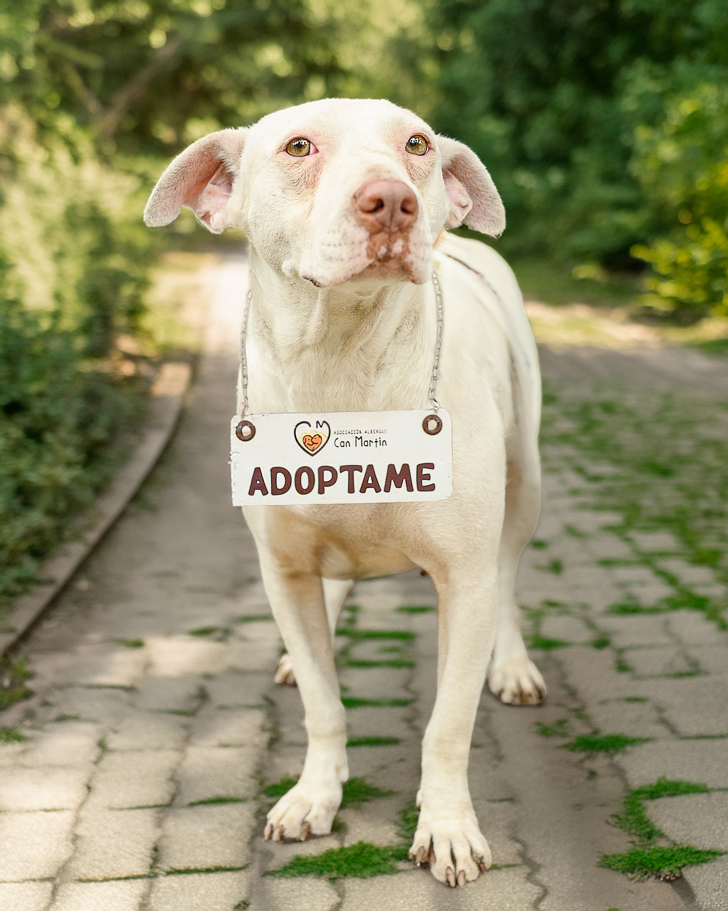
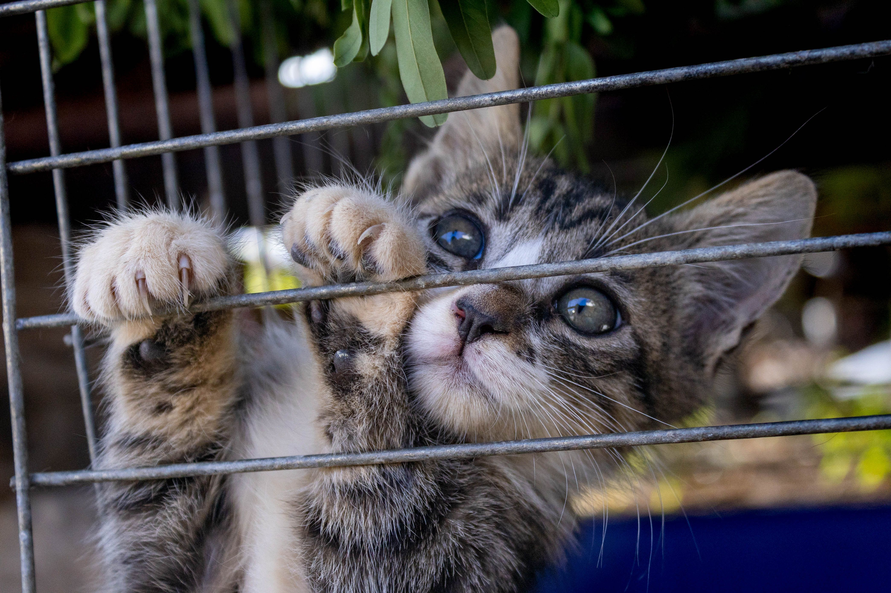

Max — 2 years old

Breed: Golden Retriever Mix
Personality: Friendly, energetic, and great with children
Special Needs: None
Rescue. Rehabilitate. Rehome.
Every adoption saves a life and makes room for another animal in need. Our adoption process is designed to ensure every animal finds the perfect forever home (Humane Society of South Africa, 2023).

Breed: Golden Retriever Mix
Personality: Friendly, energetic, and great with children
Special Needs: None

Breed: Domestic Shorthair (Tabby)
Personality: Playful, affectionate, and loves cuddles
Special Needs: None
Breed: Staffordshire Terrier Mix
Personality: Loyal, calm, and gentle
Special Needs: Needs a home without other pets
Breed: Domestic Medium Hair
Personality: Curious, energetic, and playful
Special Needs: None
Bella was found wandering the streets of Cape Town, malnourished and scared. After three months of care and rehabilitation, she was adopted by the Smith family and is now living her best life (Paws and Whiskers Rescue Facebook, 2024).
Oscar, a senior cat, was surrendered by his elderly owner who could no longer care for him. He was adopted by a retired couple who give him all the love and attention he deserves.